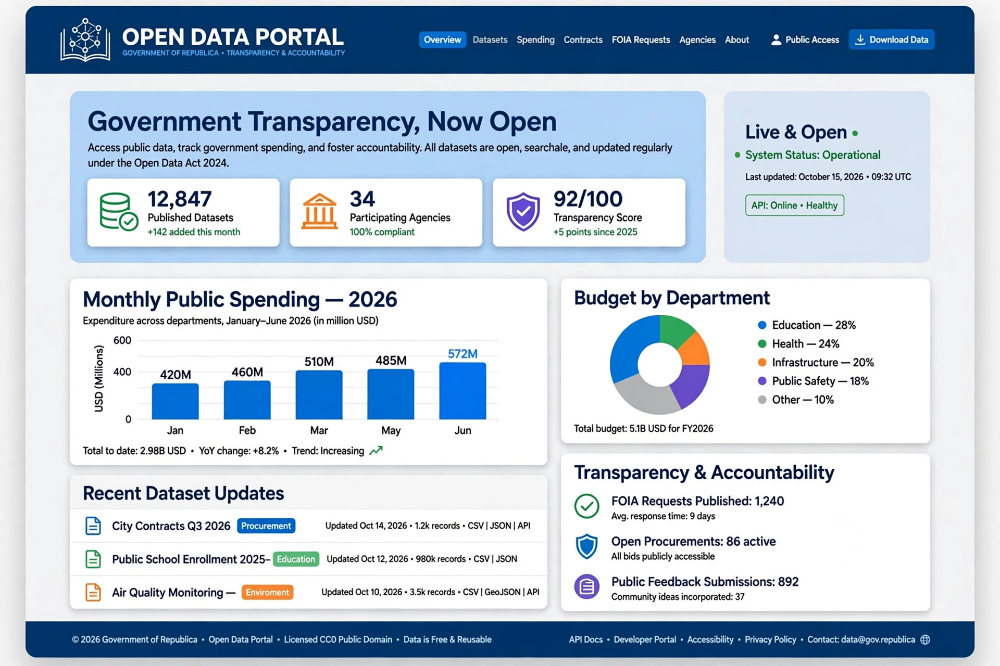

Transparency, as used in science, engineering, business, the humanities and social contexts, is the practice of operating in such a way that it is easy for others to see what actions are performed. It implies openness, communication and accountability.

This is a broad concept page; transparency is most often discussed in relation to government, corporations, and organizations.
In politics, transparency is used as a means of holding public officials accountable and fighting corruption. Instruments include freedom of information laws, open meetings, asset disclosure, open data, proactive publication of budgets and procurement, and protection of journalists and whistleblowers. Organizations such as Transparency International publish the Corruption Perceptions Index.
Corporate transparency involves disclosure of financial results, governance and supply chains; radical transparency extends openness to salaries and decision-making. In management, media and technology, the term also covers algorithmic transparency and transparent pricing, while in physics and materials science a transparent material transmits light.
Scholars note transparency does not automatically produce trust or accountability, and can conflict with privacy, security and effective deliberation.